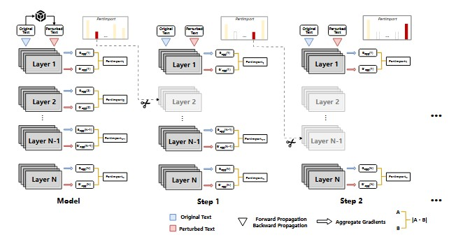
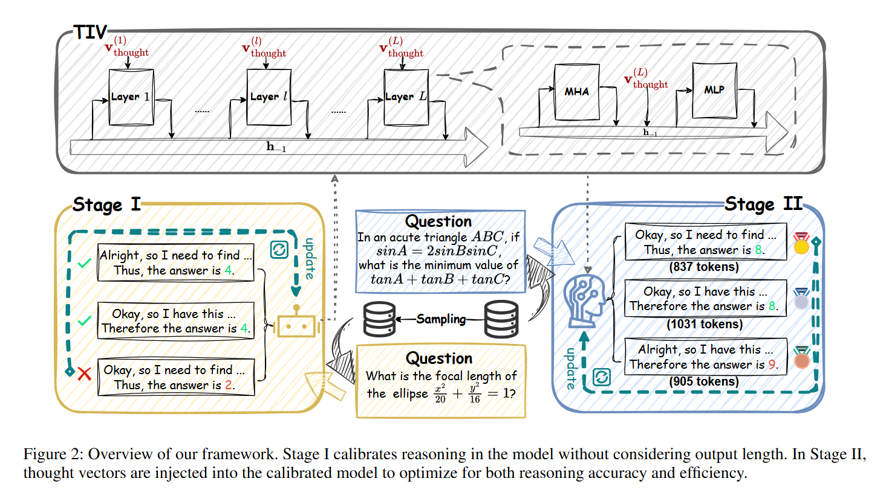

News
- [Dec.2025] Release one paper about Deep Clustering.
- [Nov.2025] One paper about Efficient LLM(TIV) has been accepted by AAAI2026 !
- [Oct.2025] Spend three wonderful months in Alibaba.
- [Sep.2025] Release one paper about Dimension Reduction(DAE).
- [Aug.2025] One paper about AI4Sci(LLM4MS) has been accepted by Communication Chemistry (SCI I) !
- [Aug.2025] Release one paper about Efficient LLM(TIV)
- [Aug.2025] One paper about Efficient LLM(PIP) has been accepted as Findings of EMNLP2025 !
- [Jul.2025] Start an Internship in Alibaba.
- [Apr.2025] Release one paper about LLM4Sci(LLM4MS)
- [Jan.2025] Release one paper about Efficient LLM(PIP).
- [Nov.2024] Release one paper about Spectral Clustering(DBSC).
- [Oct.2024] Release one paper about Spectral Clustering(D-Spec).
- [Sep.2024] Enroll as a master student in Nanjing University.
Research
More papers are currently surviving the peer-review gauntlet —
send thoughts and prayers 😂.

PIP: Perturbation-based Iterative Pruning for Large Language Models
Yi Cao, Wei-Jie Xu, Yucheng Shen, Weijie Shi, Chi-Min Chan, Jiajie Xu
We propose PIP (Perturbation-based Iterative Pruning), a method that iteratively prunes parameters based on the distinction between unperturbed and perturbed views.
Experimental results show that PIP reduces parameter count by approximately 20% while retaining over 85% of the original accuracy.

TIV: Thought Injection via Vectors for Efficient Reasoning in Large Reasoning Models
Yi Cao, Weijie Shi, Wei-Jie Xu, Yucheng Shen, Yue Cui, Hanghui Guo, Shimin Di, Ziyi Liu, Jiaming Li, Alexander Zhou, Jia Zhu, Jiajie Xu
AAAI2026
We propose TIV, an innovative framework that compresses token-level reasoning into compact vectors without sacrificing performance.
Rather than generating explicit thoughts, TIV injects learnable vectors into the post-attention hidden states of the final token across Transformer layers,
enabling implicit and lightweight reasoning.
A large language model for deriving spectral embeddings for accurate compound identification in mass spectrometry
Yang Xu, Yi-Xiao Ma, Wei-Jie Xu, Zu-Liang Yang, Kai Ming Ting
We propose LLM4MS, a method leveraging expert knowledge from large language models to generate discriminative spectral embeddings for improved compound identification.
Experimental results show a 13.7% improvement in accuracy over existing methods on a million-scale library, with a query speed of nearly 15,000 queries per second.
Award
-
New Point Software Scholarship,
link,
2021–2022, School of Computer Science and Technology, Soochow University.